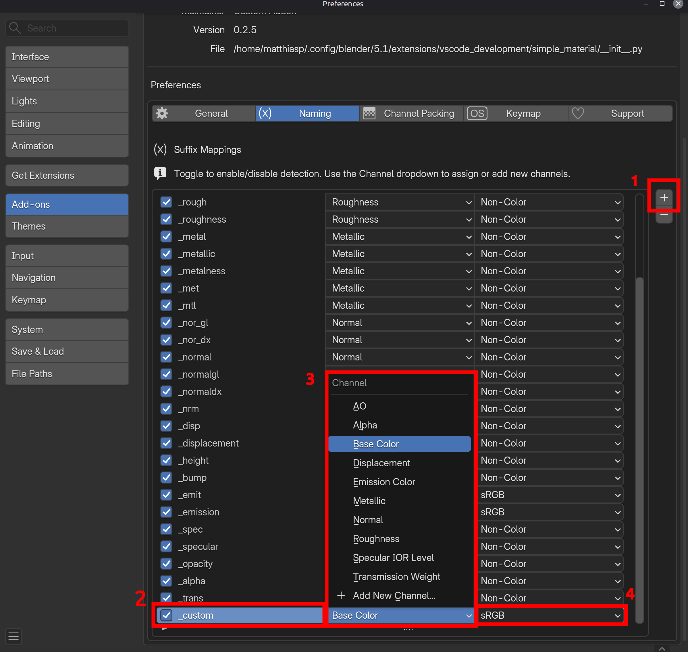
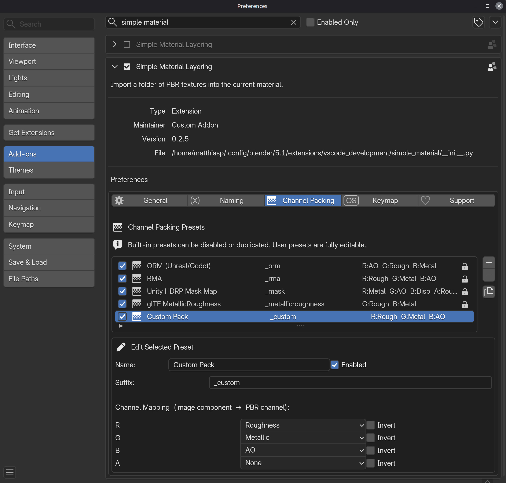

Importing Textures
How It Works
Simple PBR Layering scans the filenames in a chosen directory and matches known suffix patterns to PBR channels. Matched textures are loaded into image nodes, their colorspaces are set automatically, and they are connected to the correct inputs of a Principled BSDF-based node group — all in a single operation.
Step-by-Step
- Select the object whose material you want to populate.
- Open the Simple PBR Layering panel in the N-Panel (N key).
- In the Import Texture Set section, set the Directory to the folder containing your PBR textures.
- (Optional) Click Scan to preview the detected channel assignments before importing.
- Click Import to load and connect all matched textures.
Default Channels
| Channel | Colorspace | Common Suffixes |
|---|---|---|
| Base Color | sRGB | _diff, _albedo, _color |
| Roughness | Non-Color | _rough |
| Metallic | Non-Color | _metal |
| Normal (OpenGL) | Non-Color | _nor_gl, _normal |
| Normal (DirectX) | Non-Color | _nor_dx |
| Ambient Occlusion | Non-Color | _ao |
| Displacement | Non-Color | _disp, _height |
| Bump | Non-Color | _bump |
| Emission | sRGB | _emit |
| Specular IOR Level | Non-Color | _spec |
| Alpha / Opacity | Non-Color | _opacity, _alpha, _trans |
| Transmission Weight | Non-Color | _trans |
Note
Suffix matching is not case-sensitive. A file named Rock_Albedo.png will match the _albedo suffix just
as rock_albedo.png would.
Custom Suffix Mappings

If your texture naming convention uses different suffixes, you can add custom mappings in the addon preferences.
- Go to Edit → Preferences → Add-ons → Simple PBR Layering.
- In the Custom Suffix Mappings list, click +(1) to add a new entry.
- Set the Suffix(2) (e.g.
_basecolor), choose the Channel(3), and select the Colorspace(4). Note that you are not constraint by the predefined channels but can also add your own.
Channel Packing
Similar to regular channels you can also add channel packing suffixes and specify what color channel contains which information.

Custom entries take precedence over the built-in suffix list.
Scan Preview
Before importing, the Scan button shows a preview list of all detected texture→channel pairs:
- Green entries are matched and ready to import.
- Unmatched files are listed separately so you can decide whether to add a custom suffix for them.
This step is optional — Import will run the scan automatically if you skip it.
DirectX vs. OpenGL Normals
Simple PBR Layering detects DirectX normal maps via the _nor_dx suffix and automatically applies a Flip Y
node so the normal map integrates correctly with Blender's OpenGL-based shading system.
If you have a DirectX normal that was imported without the suffix, use the Flip Y operator in the Adjustments section to correct it manually.